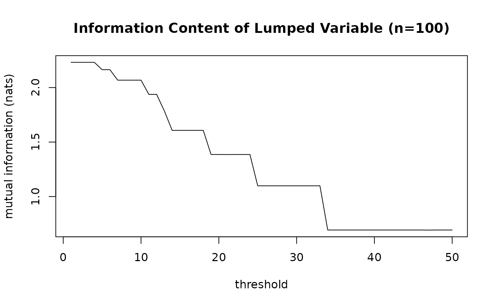

Plots the information content of the variable to be lumped for various values of the threshold. This is useful for determining the correct value to use, in order to not lose too much information.
Usage
threshold_diagnostic(
X,
y = NULL,
thresholds = NULL,
lumping_mode = c("auto", "ordinal", "nominal", "hierarchical", "heuristic"),
preference_graph = NULL,
clusters = NULL,
levels = NULL,
heuristic = c("smart", "largest", "other"),
outcome_mode = c("auto", "discrete", "continuous"),
plot = interactive(),
...
)Arguments
- X
Factor vector containing the variable to be lumped.
- y
Optional. The outcome variable for use with the supervised lumping functions.
- thresholds
The values of the threshold to test. Default: ranges from 1 to half the sample size.
- lumping_mode
Which type of lumping to do. Default: ordinal if
Xis ordered, nominal otherwise.- preference_graph
The adjacency matrix of the preference graph. Error if passed and
lumping_modeis not"nominal"or"heuristic". Default: a complete graph.- clusters
List of character vectors representing the levels that are allowed to be lumped together. Error if passed and
lumping_modeis not"hierarchical".- levels
Character vector specifying the strict ordinal hierarchy of the levels (from lowest to highest). Only used when
lumping_modeis"ordinal"andXis not already an ordered factor.- heuristic
Which heuristic to use if
lumping_modeis"heuristic". Errors if passed butlumping_modeis not"heuristic". Seevignette("metrics")for an explanation of the heuristics. Default:"smart".- outcome_mode
Whether to treat
yas discrete or continuous. Default: inferred based on the type ofy.- plot
Logical value dictating whether the diagnostic plot should be drawn. Set to
FALSEto only obtain the returned data. Default:TRUEin an interactive session,FALSEotherwise.- ...
Passed to
plot().
Value
Invisibly, a data.frame with columns threshold and information (the mutual
information preserved at each tested threshold), for the feasible part of the range.
Examples
n <- 100
m <- 10
data <- sample(LETTERS[1:m], n, replace = TRUE)
threshold_diagnostic(data, plot = TRUE)
